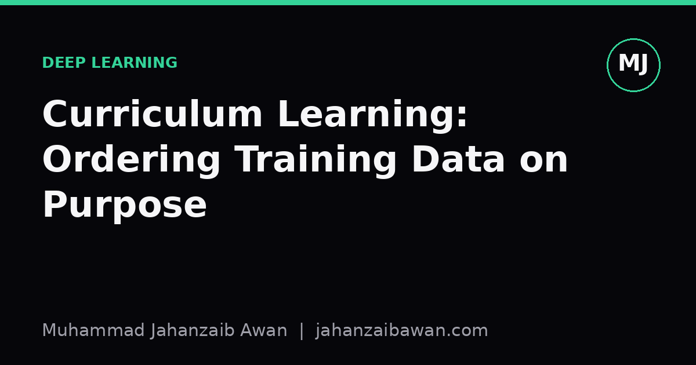

Curriculum Learning: Ordering Training Data on Purpose
Feeding a model easy examples before hard ones sounds like a teaching trick, but it changes optimisation dynamics in ways worth understanding before you bolt it onto a project.

Why the order of examples is not neutral
Most of us are taught to shuffle our training data and forget about it. Randomise the order, batch it up, and let stochastic gradient descent do its job. That default is sensible: it prevents the model from learning spurious patterns tied to the order examples happen to appear in, and it keeps each batch a roughly unbiased sample of the underlying distribution. But 'unbiased' is not the same as 'optimal for learning'. The order in which a model sees examples affects the trajectory it takes through parameter space, and some trajectories reach good solutions faster or more reliably than others.
Curriculum learning takes this seriously. The idea, which has been around in various forms for a long time, is to present training examples in a structured sequence rather than a random one, typically moving from easier or simpler cases toward harder or more ambiguous ones. The intuition is borrowed directly from how humans are taught: nobody hands a first-year student a research paper before they have seen the underlying algebra. The claim is that models, too, can benefit from scaffolding, learning stable, general structure early and only tackling noisy or complex cases once that structure is in place.
This matters in practice because early training dynamics are fragile. Gradients computed on confusing or mislabelled examples early in training can push weights into a bad region that the optimiser struggles to escape later, even once easier signal becomes available. If you have ever seen a model's loss curve spike or plateau strangely in the first few hundred steps, part of the cause may be the particular mix of easy and hard examples that landed in those early batches. Curriculum learning is one way of taking control of that instead of leaving it to chance.
A worked intuition: sorting by difficulty
Imagine training a classifier to detect whether a short product review is positive or negative, using a dataset of twenty thousand reviews. Some reviews are unambiguous: 'this is the best purchase I have made all year' or 'complete waste of money, broke on day one'. Others are genuinely hard: sarcastic reviews, mixed reviews that praise the product but criticise the delivery, or reviews where the label itself was applied inconsistently by whoever curated the dataset.
Suppose we define difficulty using a simple, cheap proxy: the confidence of a small pretrained model, or even just review length and the presence of negation words. We then split the twenty thousand reviews into five bins ordered from easiest to hardest, roughly four thousand per bin. In a naive curriculum, we train several epochs on bin one alone, then introduce bin two alongside bin one, then bin three, and so on, until by the final epochs the model sees the full mixed dataset including the hardest bin.
What tends to happen, when this works, is that the model's decision boundary forms quickly and cleanly on the easy cases, essentially learning 'positive words versus negative words' as a strong baseline signal within the first epoch. Once that scaffold exists, the harder examples act as refinements rather than shocks. A sarcastic review that the model previously would have latched onto with a confused, noisy gradient now gets interpreted against an already sensible baseline, and the gradient it produces is smaller and more corrective than destructive.
Compare this with training on the full shuffled set from step one. In early batches, the model might encounter several ambiguous or mislabelled reviews before it has any reliable notion of sentiment at all, and it can end up fitting noise into its early representations. This is not guaranteed to be a disaster, plenty of models converge fine without any curriculum, but on smaller datasets or noisier labels the effect can be a few points of accuracy or, more often, faster and more stable convergence to the same final accuracy. The efficiency gain, not just the final number, is usually the more honest thing to report.
Where curricula actually help, and where they mislead you
The evidence for curriculum learning is genuinely mixed, and I think that mix is worth taking seriously rather than picking the result that flatters the idea. Curricula tend to help most clearly in a few situations: when the dataset is small enough that early noisy gradients have an outsised effect, when there is a natural and reliable notion of difficulty available cheaply, and when training is otherwise unstable, for instance with high learning rates or unusual architectures. Curricula tend to help least, or not at all, when the dataset is large, when difficulty is hard to define without a model you don't yet have, or when the model is already robust enough that batch-to-batch variation washes out over enough steps.
There is a subtler trap here too. If your notion of 'difficulty' is derived from a model, you have introduced a dependency that can leak information or bias in ways that are hard to see. If you rank examples by the confidence of a model trained on the same test distribution, and that model happens to be systematically wrong about a particular subgroup, marking real signal as 'noise' and deferring it to the end of training, you can end up with a model that never properly learns that subgroup, because by the time it appears in force the learning rate has decayed and the model's capacity to adjust has shrunk. This is a leakage-adjacent failure mode, not literal test set leakage, but it rhymes with it: your evaluation of 'did the curriculum help' can look good on average while quietly degrading performance on a slice you never separately checked.
The honest way to evaluate a curriculum is to compare it against a strong, well-tuned random-shuffle baseline, not a weak one, and to look at more than the headline metric. Track convergence speed, not just final accuracy, since that is often where the real benefit lives. Check performance broken down by the same difficulty bins you used to build the curriculum, to see whether gains are broad or concentrated in the easy end where they were already achievable. And repeat the comparison across a few random seeds, because ordering effects interact with initialisation in ways that a single run can flatter or hide.
The practical takeaway
Curriculum learning is not a trick you should reach for by default, and it is not free. Defining difficulty costs effort, introduces assumptions, and can quietly bias what the model learns first and, by extension, what it learns well. But it is a genuinely useful tool to have in mind, particularly on smaller or noisier datasets where training stability is the bottleneck rather than raw model capacity.
If you try it, keep the curriculum simple and the difficulty measure transparent, something you can explain in one sentence and audit by eye. Compare against a proper baseline, watch convergence speed as carefully as final accuracy, and check subgroup performance before declaring victory. Ordering your data on purpose is a small change to make and a large one to evaluate honestly, and that second part is where most of the real work sits.